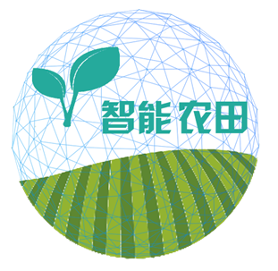
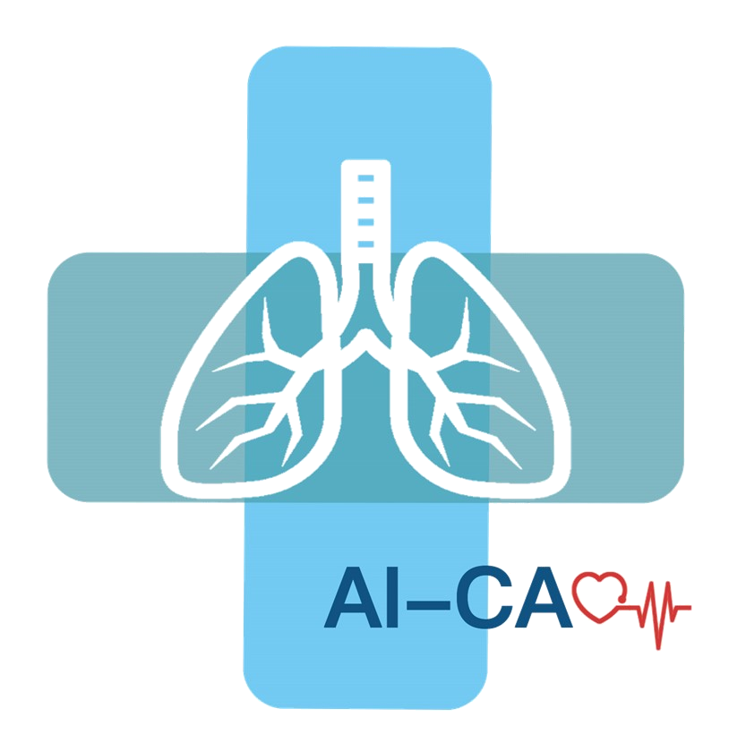

国家项目
■ 国家重点研发计划“主动健康和老龄化应对”重点专项“辅具评估与适配服务支持云平台研发” (2018YFC2002603)
省部和地区项目
■ 北京市科学技术委员会（北京市外国专家局）项目 (Z221100002722009)
■ 中国科学院青年创新促进会项目 (2021101)
■ 湖南省科技创新计划项目 (2022RC4006)
■ 湖南省自然科学基金项目 (2023JJ70009)
国家实验室项目
■ 基于算力网的智能感知***——新型多模态基础模型*** (220107KY23004/002)
■ 基于算力网的智能感知计算技术与平台 (PCL2023A08)
其他项目
■ 2022年冬奥会手语数字人播报系统
■ 残疾人远程轮椅适配平台
■ 一种基于CNN的CAPTCHA图灵测试的入侵欺骗方法 (NSFC-61772308)
■ t-k-means: 一种更稳定的高鲁棒k-means变种模型 (NSFC-61202358)
■ 肺部4D-CT图像的高精度非刚性配准算法研究 (NSFC-81671848)
创业项目
| |
项目 |
领域 |
角色 |
日期 |
| |
iSight Glass |
为极客定制的虚拟现实眼镜 |
创始人 |
2017年2月 |
|  |
iPlant |
智能农田管理系统 |
创始人 |
2015年6月 |
|  |
AI-CAD |
肺癌早期筛查辅助系统 |
创始人 |
2017年4月 |